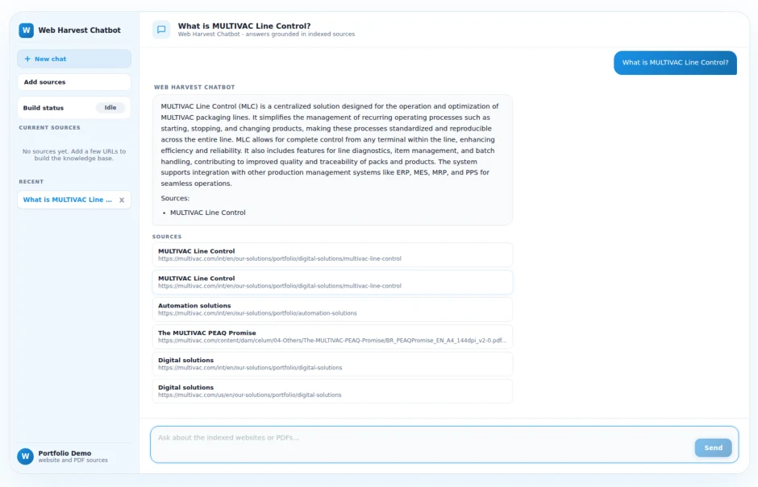

RAG · 检索研究 · 生产部署
Web Harvest RAG
一个配置驱动的 RAG 聊天机器人脚手架——抓取任意网站或 PDF，分块并向量化，用向量 + 关键词混合检索，然后基于这些内容对话。已完成开发、对照公开信息检索基线做了评测，并部署到生产环境。
架构：抓取 → 分块 → 向量化 → 检索 → 对话
六个阶段，每个都可以独立替换——本项目的大部分工程工作都集中在检索阶段。
1抓取
config/sources.json → scraper.py 拉取 HTML 页面和 PDF，提取干净可读的内容。
2分块
固定大小的 token 窗口或结构化（按标题）切分——经过系统比较，而不是想当然。
3向量化
OpenAI text-embedding-3-small，按内容哈希缓存，重复运行不必重复付费调用 API。
4检索
向量检索（FAISS / Supabase pgvector）+ BM25，融合排序。
5生成
FastAPI 后端用检索到的分块构建上下文，调用对话模型，并保存会话。
6对话
Next.js 界面——添加数据源、实时查看索引构建、提问、查看引用来源。
生产环境使用 Supabase pgvector 做检索。另有一个独立模块 retrieval_lab，专门用来回答“第 4 阶段这样做真的是最好的吗？”，且不影响线上应用。
retrieval_lab：独立的实验框架
围绕检索质量提出问题，每一个都用真实数据而不是假设来回答——与生产应用完全隔离。
1分块策略
固定大小 token 窗口与结构化（按标题）切分的正面对比。
2向量 vs. BM25 vs. 混合
FAISS 余弦检索、rank_bm25 关键词检索，以及两种融合策略（线性加权 + RRF）。
3交叉编码器重排序
用 ms-marco-MiniLM 对混合检索候选集重排序——经过测试验证，而非默认有效。
4分块大小扫描
200 / 500 / 1,000 token 的分块，直接衡量完整性与噪声之间的权衡。
5LLM 查询改写
把每个查询改写成多个变体，分别检索，再用倒数排名融合（RRF）合并。
6错误归类分析
每个召回不完美的查询都会被自动归入某个失败类别，再逐条人工阅读。
7Alpha 调参
在留出的验证集上扫描混合融合权重，再在独立的测试集上评估。
8LLM 评审答案
不只是“有没有检索到正确的分块”——生成的答案是否真的忠实于它？
| 语料库 | 内容 |
|---|---|
| A – MULTIVAC | 24 个抓取的公司网页/PDF，30 条人工标注查询 |
| B – NFCorpus | 公开的 BEIR 基准：3,633 篇文档，323 条官方测试查询 |
五个真实的 bug，都是实际测试中发现的
每一个都是通过端到端运行系统、仔细检查输出发现的——而不是仅靠代码审查。
未鉴权的密钥接口
应用内的设置面板允许任何人通过 GET 请求以明文 JSON 获取真实的 OpenAI/Supabase 密钥，且无任何鉴权。已在首次公开部署前在生产环境中禁用。
混合融合中的补零打分 bug
不在某一方法 top-20 中的候选被记为 0 分而不是真实得分——不公平地惩罚了只被一种方法看好的分块。改为在全部候选并集上精确重新打分后修复。
recall@k 结果不确定
相同的查询、索引和 alpha 在三次运行中得到三个不同的 recall@1——原因是 Python 原生 set() 的迭代顺序依赖哈希种子，悄悄打乱了同分结果的顺序。
LLM 评审混淆了两种失败
一个正确的“我无法确认”的拒答被打出和幻觉一样低的分。评审提示词区分检索失败与生成失败后，平均分从 3.32 升至 4.92 / 5。
依赖漂移导致线上对话崩溃
未锁定版本的 supabase 客户端升级到新 API，其中 .insert().select().single() 已不存在——所有 /chat 请求都返回 500。这是在新部署上做冒烟测试时发现的，而不是 CI。
结论：谁赢了，在哪里赢
MULTIVAC——structural-500
recall@k，30 条人工标注查询
| 方法 | Recall@1 | Recall@5 |
|---|---|---|
| 仅向量 | 60.0% | 93.3% |
| 仅 BM25 | 75.0% | 95.0% |
| 混合（线性） | 78.3% | 96.7% |
NFCorpus——fixed-500（BEIR）
recall@k，323 条官方测试查询，调优后 α = 0.8
| 方法 | Recall@5 | Recall@100 |
|---|---|---|
| 仅向量 | 13.9% | 35.4% |
| 仅 BM25 | 11.6% | 23.0% |
| 混合（线性） | 14.4% | 36.0% |
BM25 在 MULTIVAC 上胜出——品牌术语密集的内容（“MLC”“PEAQ”“GS1 Digital Link”）更适合精确关键词匹配。向量检索在 NFCorpus 上胜出——专业的医学摘要与口语化查询之间存在词汇鸿沟，只有语义检索能跨越。混合检索在两个语料上都优于两者中更好的那个，但前提是针对每个语料单独调参。没有哪种方法可以作为万无一失的默认选择。
验证：本框架在 NFCorpus 上的 BM25 recall@100（23.0%）与 BEIR 官方公布的 BM25 基线（25.0%）相差不到 2 个百分点——绝对数值偏低是数据集本身的特性，而不是实现有 bug。
真正上线，而不只是演示
webrag.huxiaoheng.com——一次真实对话，从生产索引中检索。

基础设施
Docker Compose——相互隔离的 FastAPI 与 Next.js 容器，只绑定 localhost，restart: unless-stopped。
边缘层
nginx 反向代理 + Let’s Encrypt TLS，与另外两个线上项目共用同一台主机。
数据
端到端重建生产 Supabase 索引：覆盖全部 24 个源文档，分块数从 81 增至 340。
验证
真实提问、真实带引用的回答——通过公网 HTTPS 域名验证，而不只是 localhost。
技术栈
| 技术 | 用途 |
|---|---|
| Next.js 15 | 聊天界面，App Router |
| FastAPI | RAG、数据源、会话 |
| Supabase | pgvector，match_chunks RPC |
| OpenAI | gpt-4o-mini + text-embedding-3-small |
| FAISS | 本地向量检索（retrieval_lab） |
| rank_bm25 | 关键词检索（retrieval_lab） |
| sentence-transformers | 交叉编码器重排序 |
| Docker + nginx | 生产部署 |